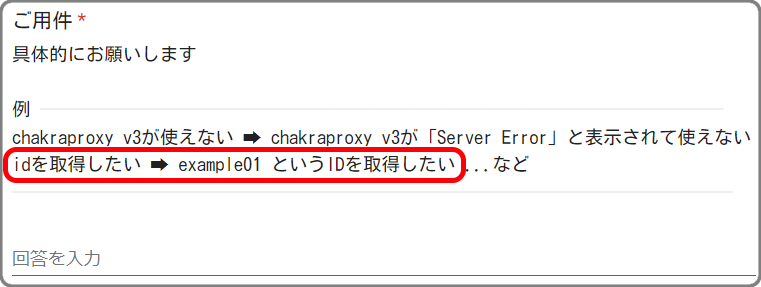

基本どんな質問等もそのまま表示、回答しますが、個人情報等は ***** のような形で伏せさせてもらいます。
また、基本回答には24時間またはそれ以上かかるのでご了承ください。 (LINEまたはインスタなら即回答できます)
そうですね、v5を使いたい理由があれば教えてください
なおしましたー
なおしときます
追加しました
フォームの注意事項にも書きましたが、IDが欲しいなら希望するIDを入力してほしいです
そもそも回避用のサイトが開けないからね。
てか夜ってことは家だよね？ 普通にスマホとか使えばよくない？？